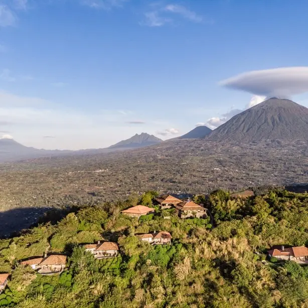
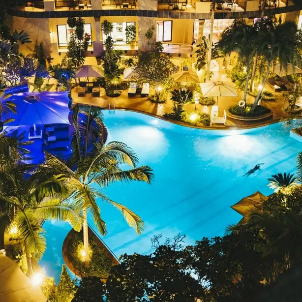
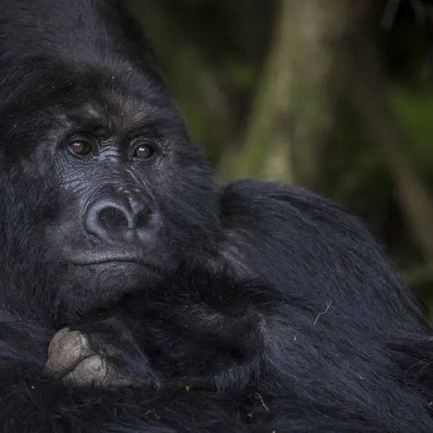

Rwanda is easy to recognise but too often narrowly packaged. For the European travel trade, the opportunity is not to sell a gorilla permit in isolation, but to turn the country’s compact geography, premium hospitality, primate experiences, savannah, lake country and sophisticated capital into a coherent journey with more nights, more variety and more value for the client.
Sell the journey, not only the trek
Mountain gorillas are the image that opens the conversation, but they should not have to carry the entire itinerary. A stronger Rwanda programme uses the gorilla experience as its emotional high point while giving the client time to understand Kigali, settle into the Volcanoes region, add a second primate experience and then change pace at Lake Kivu, Akagera or Nyungwe.
For advisors, Rwanda’s combination of Kigali, gorilla tracking, Akagera, other primates and Lake Kivu is useful evidence that the country can support a complete holiday rather than a short extension.

Kigali: make the arrival part of the product
Kigali works best when treated as the opening chapter rather than a transfer point. One or two nights create space for arrival, context and a measured start before the countryside. For premium leisure travellers this can mean dining, contemporary Rwandan culture, art and carefully handled historical interpretation. For executive travellers, Kigali can anchor meetings or a business programme before a leisure extension.
Kigali Serena Hotel illustrates why the city component can serve both markets: it is centrally positioned and combines leisure facilities with substantial meeting and event infrastructure. The trade opportunity is wider than a room night: an advisor can build a credible city stay for a couple beginning a premium holiday, a senior executive adding private leisure time, or an incentive group wanting Rwanda beyond the conference room.

Volcanoes: slow down the most valuable part of the trip
The common mistake around Volcanoes National Park is to compress the experience around one early-morning trek. A better premium programme allows two or three nights in the region. That creates breathing room around the gorilla experience and makes space for golden monkey tracking, conservation and community experiences, landscape, and the simple pleasure of being in the Virunga highlands.
That extra night matters commercially as well as experientially. It makes the itinerary more resilient, reduces the feeling of rushing between Kigali and the park, and makes premium lodge selection part of the journey itself.
What European advisors can package
| Journey shape | Length | Best suited to | Why it sells |
|---|---|---|---|
| Kigali + Volcanoes + Lake Kivu | 6–7 nights | First-time Rwanda; couples | Headline primates, city context and a softer finish. |
| Kigali + Akagera + Volcanoes + Lake Kivu | 9–10 nights | Wildlife-first; repeat Africa | Safari, primates and landscape variety. |
| Kigali + Volcanoes + Lake Kivu + Nyungwe | 9–11 nights | Primate enthusiasts | A deeper single-country nature journey. |
| Rwanda + Kenya or Tanzania | 10–14+ nights | Iconic East Africa seekers | Pairs primates with classic savannah safari. |
More value without overloading the itinerary
The opportunity for European advisors is not simply to add more activities. It is to add the right nights. Rwanda lends itself to higher-value packaging because its strongest products are complementary: a well-chosen Kigali hotel, a carefully paced Volcanoes stay, a second primate experience, a lake or safari extension, private transfers and well-timed regional connections.
Honeymooners can prioritise privacy, scenery and lodge quality; mature travellers may value pacing and fewer hotel changes; wildlife clients can combine Akagera with primates; and business travellers can add private leisure nights around a Kigali engagement.

Golden monkeys: a useful second experience
Golden monkey tracking broadens the Volcanoes programme without trying to duplicate the gorilla experience. It gives a second morning in the forest a distinct purpose, works naturally within a multi-night stay and helps an advisor explain why the client should not leave the region immediately after the gorilla trek.
Lake Kivu, Akagera or Nyungwe
Lake Kivu is the natural change of pace: water, scenery and time to decompress after trekking. Akagera changes the visual language completely, adding savannah and Big Five safari to a primate-led trip. Nyungwe is the deeper natural-history choice, extending the primate story into rainforest and chimpanzee territory. The strongest advice is not to force all three into every programme. Choose the extension that gives the client contrast.
Rwanda beyond leisure
Rwanda’s business and meetings profile creates an additional selling opportunity. Kigali has hotel and meeting infrastructure to support executive and MICE travel, while the country’s leisure highlights make pre- and post-business extensions realistic. For advisors handling senior executives, associations or incentive groups, this is where leisure expertise and executive mobility can meet.
Practical selling notes
- Protect gorilla permits and preferred lodge space early, reconfirming current pricing and conditions at booking.
- Build buffer and recovery time into a premium programme.
- Use seasonality intelligently, accounting for rainfall, trail conditions and trekking tolerance.
- Match Lake Kivu, Akagera or Nyungwe to the traveller rather than forcing every extension into one trip.
- Confirm current regional flight schedules and baggage conditions before presenting the final routing.
Rwanda as a business gateway
Rwanda’s economy expanded by 9.4% in 2025, with services accounting for the largest share of GDP. Its position within the East African Community, together with the expanding African Continental Free Trade Area, means Kigali can be considered not only as a national market but as a potential base from which companies can engage wider East African and continental opportunities.
For European executives exploring African expansion, this creates a natural opportunity to combine a Rwanda journey with market discovery—meetings with potential partners, sector introductions and investment institutions alongside the country’s established leisure experiences.
The Resplendent approach
Rwanda is best approached as a designed journey rather than a checklist. We work across premium leisure travel, tailored African itineraries and executive mobility, allowing international travel professionals to combine the destination’s strongest experiences with the practical coordination required to deliver them smoothly.
For European advisors, the proposition is straightforward: sell the gorillas, certainly—but package Rwanda as the journey around them.
From editorial to journey
Experience Rwanda with intention.
Let Resplendent shape the city, primate encounters, landscapes and practical coordination around your preferred pace.
Plan Your Rwanda Journey